酒店预订平台用户流失概率预测 1、项目介绍 某酒店预订平台所属公司作为中国领先的综合性旅行服务公司，每天向超过2.5亿会员提供全方位的旅行服务，在这海量的网站访问量中，我们可分析用户的行为数据来挖掘潜在的信息资源。其中，客户流失率是考量业务成绩的一个非常关键的指标。此次分析的目的是为了深入了解用户画像及行为偏好，找到最优算法，挖掘出影响用户流失的关键因素 ，从而更好地完善产品设计、提升用户体验！
目的
评估标准
数据集
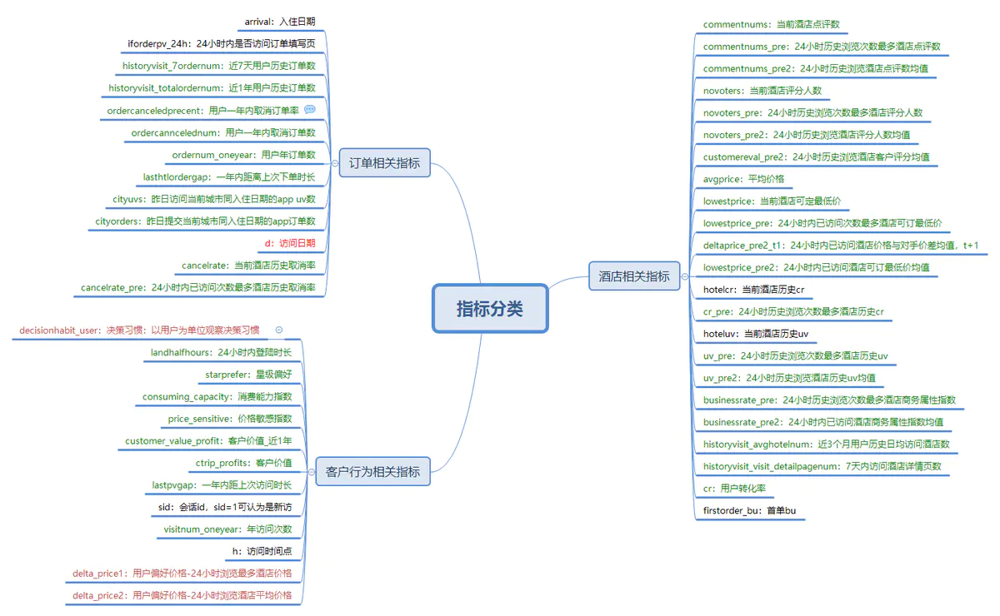
2、项目流程 2.1 数据预处理 2.1.1 目标特征分布 导入相应包和数据
1 2 3 4 5 6 7 8 9 10 11 12 import pandas as pdimport numpy as npimport matplotlib.pyplot as pltimport seaborn as snsfrom datetime import datetimefrom sklearn.cluster import KMeansfrom sklearn import preprocessingfrom sklearn.preprocessing import StandardScaler,OneHotEncoderfrom sklearn.model_selection import StratifiedKFoldfrom sklearn import metricsdf_orign = pd.read_csv('userlostprob_train.txt' , sep='\t' ) df = df_orign.copy()
1 2 3 4 5 In[1 ]: df['label' ].value_counts() Out[1 ]: 0 500588 1 189357 Name: label, dtype: int64
流失和未流失的用户比例2:5 ，样本不是非常不平衡，所以不做处理。
但也可以处理，这里想到两个方法：
1、对小类样本错分进行加权惩罚
2、数据重采样（大样本欠采样，小样本过采样）
2.1.2 处理异常值 1、负值
用户偏好价格delta_price1(132816条)、delta_price2(134606条)，以及当前酒店可订最低价lowestprice(1条)，理论上酒店的价格不可能为负，考虑到可能是因为优惠折扣的原因，因此采取0填充 。
1 df[['delta_price1' ,'delta_price2' ,'lowestprice' ]] = df[['delta_price1' ,'delta_price2' ,'lowestprice' ]].applymap(lambda x: 0 if x<0 else x)
客户价值customer_value_profit、ctrip_profits为负值，一开始我觉得肯定出错，后来思考加搜索得出：用户价值可以为负，如果一个用户的行为，导致其他用户的极大反感，并造成了其他用户的流失和粘性下降，就是用户的负面价值。典型如喷子，杠精，游戏中的外挂用户等。所以这里不作处理
deltaprice_pre2_t1是酒店价格与对手价差均值，可以为负值，无需处理 。
2、异常值
24小时内登陆时长内登录时长不应该超过24小时，将大于24的值改为24
1 2 3 4 5 6 7 8 ano_values1=['delta_price1' ,'delta_price2' ,'lowestprice' ] ano_values2=['customer_value_profit' ,'ctrip_profits' ] for col in ano_values1: df.loc[df[col]<0 ,col]=df[col].median() for col in ano_values2: df.loc[df[col]<0 ,col]=0 df.loc[df['landhalfhours' ]>24 ,['landhalfhours' ]] = 24
2.1.3 处理缺失值 各个字段缺失值情况：
1 2 3 4 5 6 7 8 9 10 11 na_rate = (len (df)-df.count())/len (df) na_rate_order = na_rate.sort_values(ascending=False ) na_rate_order.head() Out[5 ]: historyvisit_7ordernum 0.879824 historyvisit_visit_detailpagenum 0.554698 firstorder_bu 0.453590 decisionhabit_user 0.441332 historyvisit_totalordernum 0.439774 dtype: float64
缺失值太多了，画图也看不清，知道第一位缺失87%可以直接删除了
计算相关性
1 2 3 4 5 6 7 df_corr = df[df.columns.values.tolist()].corr() df_na = na_rate_order[na_rate_order>0 ].index.tolist() len (df_na) df_na_corr = {} for i in df_na: df_na_corr[i] = df_corr[i].sort_values(ascending=False )[[1 ]] df_na_corr
1、字段’historyvisit_7ordernum ‘缺失程度太高，遂删去。
2、其他字段：这里通过查看它们的相关性、缺失程度、数据类型考虑以下几种填充办法
2.1.3.1 用其他字段组合填充 这里的标准是，相关性高，字段取值一定程度上可以代替彼此，比如
commentnums_pre(24小时历史浏览次数最多酒店点评数 )和novoters_pre(24小时历史浏览次数最多酒店评分人数 )；commentnums_pre2(24小时历史浏览次数最多酒店点评数均值 )和novoters_pre2(24小时历史浏览酒店评分人数均值 )
1 2 3 'commentnums' : novoters 0.992748 'commentnums_pre2' : novoters_pre2 0.985438
如何组合？
1 2 3 4 5 6 7 8 9 10 11 (df['commentnums_pre' ]/df['novoters_pre' ]).describe() Out[13 ]: count 597927.000000 mean 0.664643 std 1.187749 min 0.000000 25 % 0.538941 50 % 0.656166 75 % 0.733766 max 160.000000 dtype: float64
可以看到 二者的比值的中位数是 0.656166。可以理解为2/5=2.5 那么2*2.5可以==5,
5/2.5==2
所以就用novoters_prenovoters_pre*65% 填充 commentnums_pre；
commentnums_pre/65% 填充 novoters_prenovoters_pre
1 2 3 4 5 6 7 8 9 10 11 def fill_commentnum_novoter_pre (x ): if (x.isnull()['commentnums_pre' ])&(x.notnull()['novoters_pre' ]): x['commentnums_pre' ] = x['novoters_pre' ]*0.65 elif (x.notnull()['commentnums_pre' ])&(x.isnull()['novoters_pre' ]): x['novoters_pre' ] = x['commentnums_pre' ]/0.65 else : return x return x df[['commentnums_pre' ,'novoters_pre' ]] = df[['commentnums_pre' ,'novoters_pre' ]].apply(fill_commentnum_novoter_pre,axis=1 ) df[['commentnums_pre' ,'novoters_pre' ]].info()
1 2 3 4 5 6 7 8 9 10 def fill_commentnum_novoter_pre2 (x ): if (x.isnull()['commentnums_pre2' ])&(x.notnull()['novoters_pre2' ]): x['commentnums_pre2' ] = x['novoters_pre2' ]*0.65 elif (x.notnull()['commentnums_pre2' ])&(x.isnull()['novoters_pre2' ]): x['novoters_pre2' ] = x['commentnums_pre2' ]/0.65 else : return x return x df[['commentnums_pre2' ,'novoters_pre2' ]] = df[['commentnums_pre2' ,'novoters_pre2' ]].apply(fill_commentnum_novoter_pre2,axis=1 )
2.1.3.2 均值、中位数、0填充 1 2 3 4 5 6 7 8 9 10 11 fill_mean = ['cancelrate' ,'landhalfhours' ,'visitnum_oneyear' ,'starprefer' ,'price_sensitive' ,'lowestprice' ,'customereval_pre2' , 'uv_pre2' ,'lowestprice_pre2' ,'novoters_pre2' ,'commentnums_pre2' ,'businessrate_pre2' ,'lowestprice_pre' ,'hotelcr' ,'cancelrate_pre' ] df[fill_mean] = df[fill_mean].apply(lambda x:x.fillna(x.mean())) fill_median = ['ordernum_oneyear' ,'commentnums_pre' ,'novoters_pre' ,'uv_pre' ,'ordercanncelednum' ,'ordercanceledprecent' , 'lasthtlordergap' ,'cityuvs' ,'cityorders' ,'lastpvgap' ,'historyvisit_avghotelnum' ,'businessrate_pre' ,'cr' ,'uv_pre' ,'cr_pre' ,'novoters_pre' ,'commentnums_pre' ,'novoters' ,'hoteluv' ,'ctrip_profits' ,'customer_value_profit' ] df[fill_median] = df[fill_median].apply(lambda x:x.fillna(x.median())) df[['deltaprice_pre2_t1' ,'historyvisit_visit_detailpagenum' ]] = df[['deltaprice_pre2_t1' ,'historyvisit_visit_detailpagenum' ]].apply(lambda x:x.fillna(0 ))
2.1.3.3 用其他字段聚类自身分段填充 填充consuming_capacity，其实这一步是为了得到完整的consuming_capacity然后填充与其相关性较强的avgprice
查看与consuming_capacity相关性高的特征：
1 2 3 4 5 6 7 df_corr['consuming_capacity'].sort_values(ascending=False)[[0,1,2,3]] Out[14]: consuming_capacity 1.000000 avgprice 0.880680 starprefer 0.715734 customereval_pre2 0.420362 Name: consuming_capacity, dtype: float64
所以可以用starprefer来尝试填充，先查看二者数据分布
1 2 3 4 5 6 7 8 9 10 11 12 13 14 15 16 17 18 19 20 21 22 23 24 25 26 27 28 29 30 31 32 33 34 35 36 37 df[['consuming_capacity' ,'starprefer' ]].describe() Out[15 ]: consuming_capacity starprefer count 463837.000000 689945.000000 mean 39.154140 67.532304 std 23.240147 15.740052 min 0.000000 0.000000 25 % 22.000000 60.300000 50 % 33.000000 67.400000 75 % 51.000000 77.300000 max 100.000000 100.000000 df.loc[df['starprefer' ]<60 ,['onsuming_capacity' ,'starprefer' ]].describe() Out[16 ]: onsuming_capacity starprefer count 140364.000000 382538.000000 mean 20.522363 44.282172 std 10.048780 10.091776 min 0.000000 0.000000 25 % 14.000000 40.000000 50 % 19.000000 43.300000 75 % 25.000000 51.200000 max 100.000000 59.900000 df.loc[(df['starprefer' ]<80 )&(df['starprefer' ]>=60 ),['onsuming_capacity' ,'starprefer' ]].describe() Out[17 ]: onsuming_capacity starprefer count 165204.000000 43238.000000 mean 35.670753 67.671514 std 14.504234 4.092572 min 1.000000 60.000000 25 % 26.000000 67.532304 50 % 33.000000 67.532304 75 % 42.000000 67.532304 max 100.000000 79.900000 df.loc[df['starprefer' ]>=80 ,['onsuming_capacity' ,'starprefer' ]].describe()
综上，用starprefe把consuming_capacity分成三个区间，每个区间内的空值用均值来填充。
1 2 3 4 5 6 7 8 9 10 11 12 13 14 15 16 fill1 = df.loc[df['starprefer' ]<60 ,['consuming_capacity' ]].mean() fill2 = df.loc[(df['starprefer' ]<80 )&(df['starprefer' ]>=60 ),['consuming_capacity' ]].mean() fill3 = df.loc[df['starprefer' ]>=80 ,['consuming_capacity' ]].mean() def fill_consuming_capacity (x ): if x.isnull()['consuming_capacity' ]: if x['starprefer' ]<60 : x['consuming_capacity' ] = fill1 elif (x['starprefer' ]<80 )&(x['starprefer' ]>=60 ): x['consuming_capacity' ] = fill2 else : x['consuming_capacity' ] = fill3 else : return x return x df[['consuming_capacity' ,'starprefer' ]] = df[['consuming_capacity' ,'starprefer' ]].apply(fill_consuming_capacity,axis=1 )
2.1.3.4 用其他字段聚类填充 1 2 3 4 5 6 7 df_corr['commentnums' ].sort_values(ascending=False )[[0 ,1 ,2 ,3 ]] Out[18 ]: commentnums 1.000000 novoters 0.992748 cancelrate 0.870245 hoteluv 0.662154 Name: commentnums, dtype: float64
可看到commentnums和novoters、cancelrate、hoteluv存在较强相关性，可通过聚类取中位数的方式来填充commentnums。
1 2 3 4 5 6 7 8 9 10 11 12 13 14 15 16 17 18 19 from sklearn.cluster import KMeansfrom sklearn.preprocessing import StandardScalerkm = KMeans(n_clusters=4 ) data = df.loc[:,['commentnums' ,'novoters' ,'cancelrate' ,'hoteluv' ]] ss = StandardScaler() data[['novoters' ,'cancelrate' ,'hoteluv' ]] = pd.DataFrame(ss.fit_transform(data[['novoters' ,'cancelrate' ,'hoteluv' ]])) km.fit(data.iloc[:,1 :]) label_pred = km.labels_ data['label_pred' ] = label_pred data.loc[(data['commentnums' ].isnull())&(data['label_pred' ]==0 ),['commentnums' ]] = (data.loc[data['label_pred' ] == 0 ,'commentnums' ]).median() data.loc[(data['commentnums' ].isnull())&(data['label_pred' ]==1 ),['commentnums' ]] = (data.loc[data['label_pred' ] == 1 ,'commentnums' ]).median() data.loc[(data['commentnums' ].isnull())&(data['label_pred' ]==2 ),['commentnums' ]] = (data.loc[data['label_pred' ] == 2 ,'commentnums' ]).median() data.loc[(data['commentnums' ].isnull())&(data['label_pred' ]==3 ),['commentnums' ]] = (data.loc[data['label_pred' ] == 3 ,'commentnums' ]).median() df['commentnums' ] = data['commentnums' ]
同理，取starprefer和consuming_capacity聚类后每类avgprice的均值来填充avgprice的空值
1 2 3 4 5 6 7 8 9 10 11 12 13 14 15 km = KMeans(n_clusters=5 ) data = df.loc[:,['avgprice' ,'starprefer' ,'consuming_capacity' ]] ss = StandardScaler() data[['starprefer' ,'consuming_capacity' ]] = pd.DataFrame(ss.fit_transform(data[['starprefer' ,'consuming_capacity' ]])) km.fit(data.iloc[:,1 :]) label_pred = km.labels_ data['label_pred' ] = label_pred data.loc[(data['avgprice' ].isnull())&(data['label_pred' ]==0 ),['avgprice' ]] = (data.loc[data['label_pred' ] == 0 ,'avgprice' ]).mean() data.loc[(data['avgprice' ].isnull())&(data['label_pred' ]==1 ),['avgprice' ]] = (data.loc[data['label_pred' ] == 1 ,'avgprice' ]).mean() data.loc[(data['avgprice' ].isnull())&(data['label_pred' ]==2 ),['avgprice' ]] = (data.loc[data['label_pred' ] == 2 ,'avgprice' ]).mean() data.loc[(data['avgprice' ].isnull())&(data['label_pred' ]==3 ),['avgprice' ]] = (data.loc[data['label_pred' ] == 3 ,'avgprice' ]).mean() data.loc[(data['avgprice' ].isnull())&(data['label_pred' ]==4 ),['avgprice' ]] = (data.loc[data['label_pred' ] == 4 ,'avgprice' ]).mean() df['avgprice' ] = data['avgprice' ]
取consuming_capacity和avgprice聚类后的中位数来填充delta_price1
1 2 3 4 5 6 7 8 9 10 11 12 13 14 15 16 17 km = KMeans(n_clusters=6 ) data = df.loc[:,['delta_price1' ,'consuming_capacity' ,'avgprice' ]] ss = StandardScaler() data[['consuming_capacity' ,'avgprice' ]] = pd.DataFrame(ss.fit_transform(data[['consuming_capacity' ,'avgprice' ]])) km.fit(data.iloc[:,1 :]) label_pred = km.labels_ data['label_pred' ] = label_pred data.loc[(data['delta_price1' ].isnull())&(data['label_pred' ]==0 ),['delta_price1' ]] = 187 data.loc[(data['delta_price1' ].isnull())&(data['label_pred' ]==1 ),['delta_price1' ]] = 100 data.loc[(data['delta_price1' ].isnull())&(data['label_pred' ]==2 ),['delta_price1' ]] = 26 data.loc[(data['delta_price1' ].isnull())&(data['label_pred' ]==3 ),['delta_price1' ]] = 1269 data.loc[(data['delta_price1' ].isnull())&(data['label_pred' ]==4 ),['delta_price1' ]] = 323 data.loc[(data['delta_price1' ].isnull())&(data['label_pred' ]==5 ),['delta_price1' ]] = 573 df['delta_price1' ] = data['delta_price1' ]
缺失值处理完毕。
2.2 分析指标 2.2.1 客户分析 1、星级分布
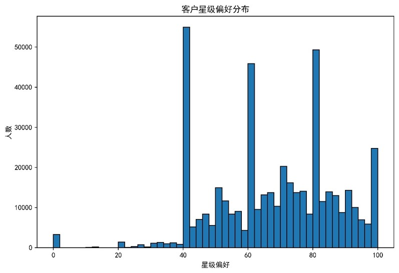
大部分客户的星级偏好在[40，100]，并且有相当多的客户的星级偏好集中在40,60,80,100左右。
2、客户价值分布
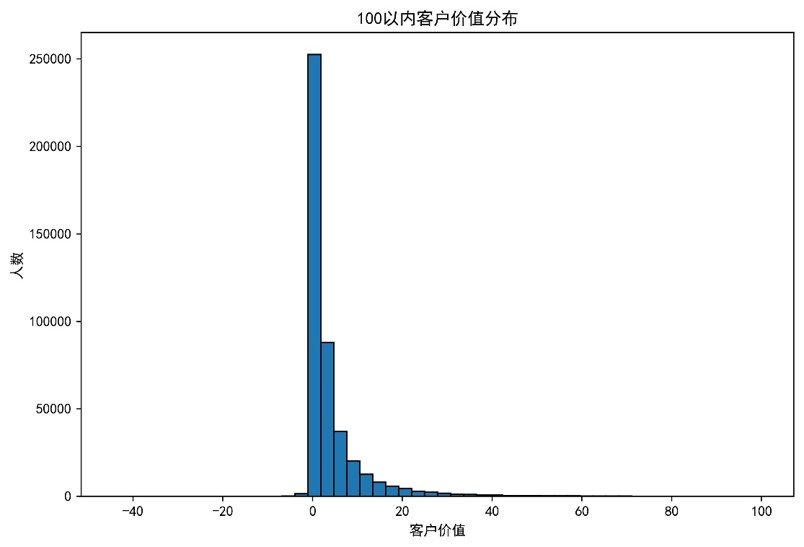
客户价值主要小于10，低价值客户占比较大。
3、价格敏感指数分布
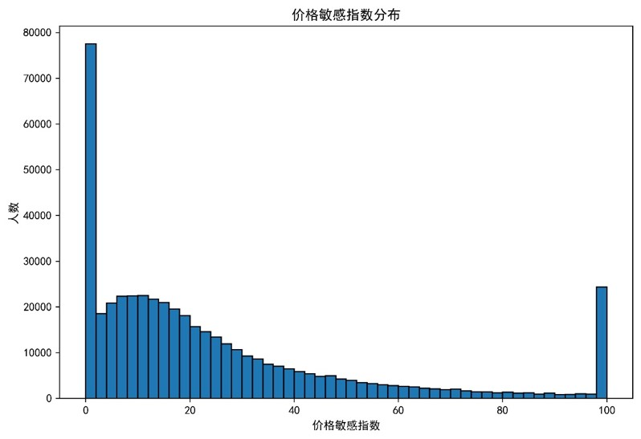
极值出现在数据两端， 大部分人对价格变动并不敏感，价格敏感指数为100时的人数也并不少，针对这一部分客户，可以考虑用一些打折优惠的方式吸引消费。
4、客户消费能力指数
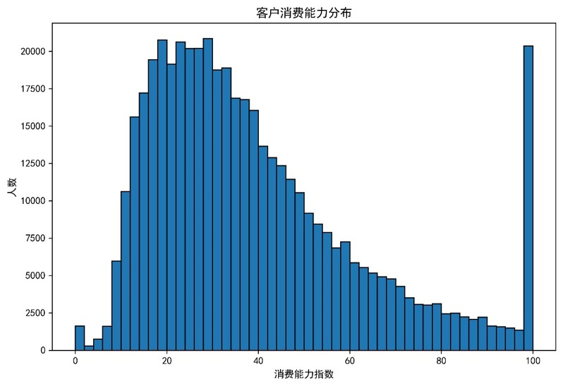
客户消费能力指数集中在[10，50]，其中在34左右的人群最多， 说明大部分消费人群消费能力中等，还有部分人群消费能力指数在接近100，属于高消费能力人群。
5、访问时间点分布
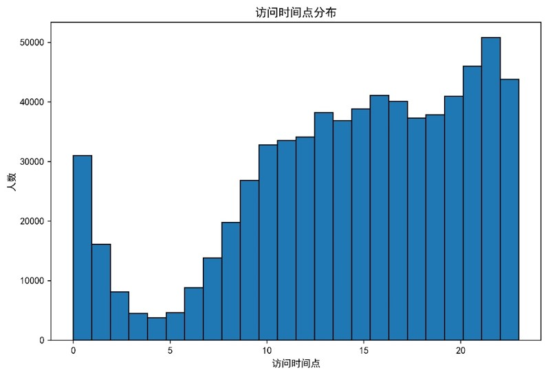
凌晨1点到7点访问人数较少，在晚上10点访问最多，这一分布符合人们的入住习惯。
6、新老客户占比及流失率
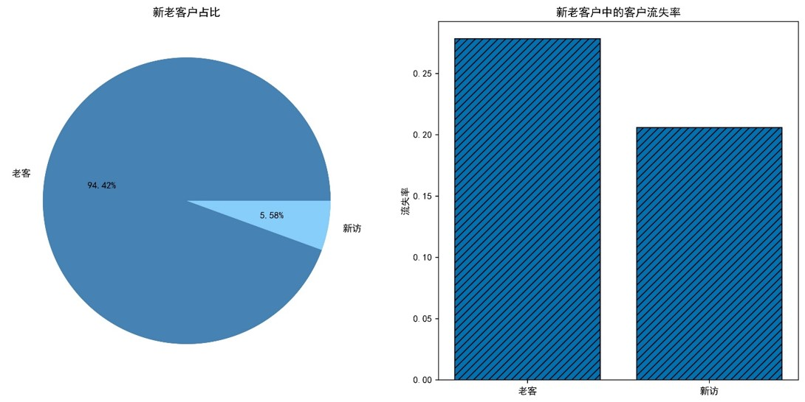
7、用户订单数分布，预定和入住人数
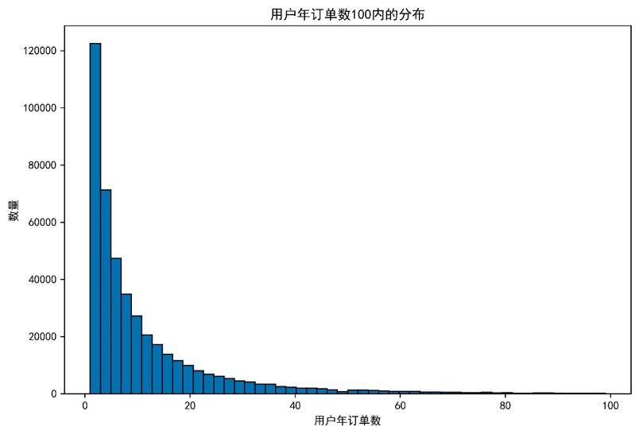
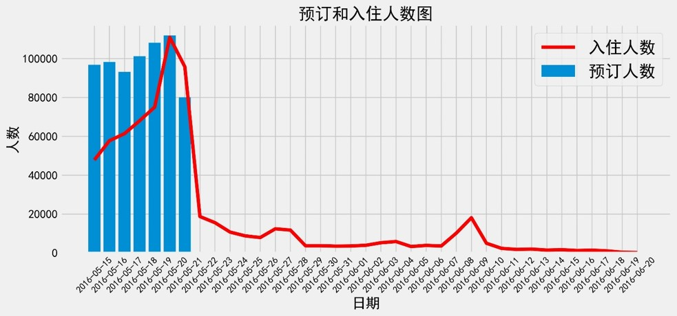
酒店的访问和入住人数在5月20日这一天达到峰值，是因为由于5月20日对于情侣有特殊的意义， 后续的酒店的入住人数有两个小高峰，对应的日期是周末的时间。
2.2.2 酒店分析 1、酒店价格分布
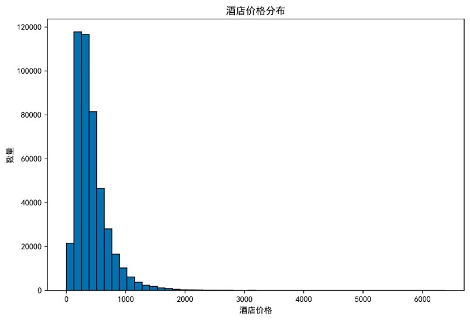
在客户选择的酒店里，大部分酒店的价格在1000元以内，100到400元价格区间内的数量最多，与客户消费能力指数趋势一致。
2、酒店商务指数
酒店商务指数分布图
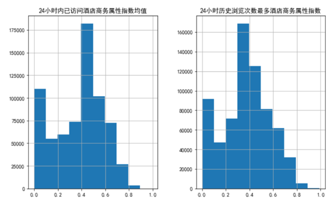
依据分布的分箱图
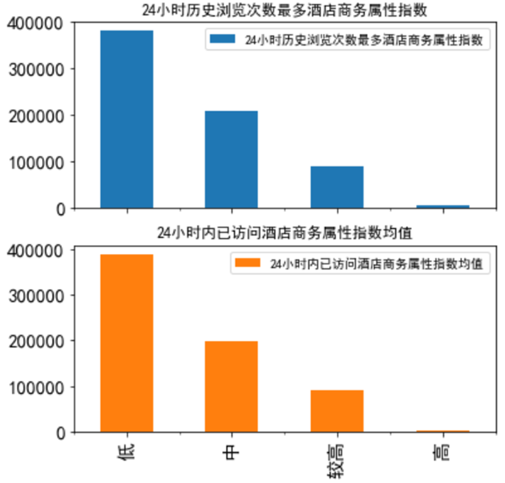
指数0.4以下:低
指数0.4~0.6:中
指数0.6~0.8:较高
指数0.8以上:高
24小时已访问 和浏览最多 酒店,商务指数小于0.6(总指数为1), 占比超80%，考虑到商务性指数与价格相关度高，而大多数人的预期价格都比较低，所以商务型指数也不高。
2.3 特征工程 2.3.1 新增字段
时间字段
1 2 3 4 5 6 7 8 df[['d' ,'arrival' ]] = df[['d' ,'arrival' ]].apply(lambda x:pd.to_datetime(x,format ='%Y-%m-%d' )) df['booking_gap' ] = ((df['arrival' ]-df['d' ])/np.timedelta64(1 ,'D' )).astype(int ) df['week_day' ] = df['arrival' ].map (lambda x:x.weekday()) df['is_weekend' ] = df['week_day' ].map (lambda x: 1 if x in (5 ,6 ) else 0 )
是否是同一个样本【选取部分客户行为指标】方便后续划分训练集和验证集 ，避免使用其他用户的数据来预测一个用户。此处添加一个user_tag来区分是否是同一个用户的订单。
1 2 3 4 5 6 7 8 9 df['user_tag' ] = df['ordercanceledprecent' ].map (str) + df['ordercanncelednum' ].map (str) + df['ordernum_oneyear' ].map (str) +\ df['starprefer' ].map (str) + df['consuming_capacity' ].map (str) + \ df['price_sensitive' ].map (str) + df['customer_value_profit' ].map (str) + df['ctrip_profits' ].map (str) +df['visitnum_oneyear' ].map (str) + \ df['historyvisit_avghotelnum' ].map (str) + df['businessrate_pre2' ].map (str) +\ df['historyvisit_visit_detailpagenum' ].map (str) + \ df['delta_price2' ].map (str) + \ df['commentnums_pre2' ].map (str) + df['novoters_pre2' ].map (str) +df['customereval_pre2' ].map (str) + df['lowestprice_pre2' ].map (str) df['user_tag' ] = df['user_tag' ].apply(lambda x : hash(x)) df['user_tag' ].unique().shape
返回670226，即实际这周有670226个用户下过订单。
用户字段和酒店字段
1 2 3 4 5 6 7 8 9 10 11 12 13 14 15 16 17 18 user_group = ['ordercanceledprecent' ,'ordercanncelednum' ,'ordernum_oneyear' , 'historyvisit_visit_detailpagenum' ,'historyvisit_avghotelnum' ] hotel_group = ['commentnums' , 'novoters' , 'lowestprice' , 'hotelcr' , 'hoteluv' , 'cancelrate' ] km_user = pd.DataFrame(df[user_group]) km_hotel = pd.DataFrame(df[hotel_group]) ss = StandardScaler() for i in range (km_user.shape[1 ]): km_user[user_group[i]] = ss.fit_transform(df[user_group[i]].values.reshape(-1 , 1 )).ravel() ss = StandardScaler() for i in range (km_hotel.shape[1 ]): km_hotel[hotel_group[i]] = ss.fit_transform(df[hotel_group[i]].values.reshape(-1 , 1 )).ravel() df['user_group' ] = KMeans(n_clusters=3 ).fit_predict(km_user) df['hotel_group' ] = KMeans(n_clusters=5 ).fit_predict(km_hotel)
2.3.2 连续特征离散化 historyvisit_avghotelnum大部分都小于5，将字段处理成小于等于5和大于5的离散值；
1 2 3 4 5 6 7 8 9 10 11 12 13 14 15 16 17 18 19 20 21 22 23 24 25 26 27 28 29 30 31 32 33 34 35 36 37 38 39 40 41 42 43 44 45 46 47 48 49 50 51 52 53 54 55 56 57 58 59 60 61 df['historyvisit_avghotelnum' ] = df['historyvisit_avghotelnum' ].apply(lambda x: 0 if x<=5 else 1 ) df['ordercanncelednum' ] = df['ordercanncelednum' ].apply(lambda x: 0 if x<=5 else 1 ) df['sid' ] = df['sid' ].apply(lambda x: 0 if x==1 else 1 ) def discrete_avgprice (x ): if x<=200 : return 0 elif x<=400 : return 1 elif x<=600 : return 2 else : return 3 def discrete_lowestprice (x ): if x<=100 : return 0 elif x<=200 : return 1 elif x<=300 : return 2 else : return 3 def discrete_starprefer (x ): if x==0 : return 0 elif x<=60 : return 1 elif x<=80 : return 2 else : return 3 def discrete_consuming_capacity (x ): if x<0 : return 0 elif x<=20 : return 1 elif x<=40 : return 2 elif x<=60 : return 3 else : return 4 def discrete_h (x ): if x>=0 and x<6 : return 0 elif x<12 : return 1 elif x<18 : return 2 else : return 3 df['avgprice' ] = df['avgprice' ].map (discrete_avgprice) df['lowestprice' ] = df['lowestprice' ].map (discrete_lowestprice) df['starprefer' ] = df['starprefer' ].map (discrete_starprefer) df['consuming_capacity' ] = df['consuming_capacity' ].map (discrete_consuming_capacity) df['h' ] = df['h' ].map (discrete_h)
对当前的数值型类别变量（定性特征）进行定性特征热编码（转化为定量特征），此处用OneHotEncoder方法
1 2 3 4 5 discrete_field = ['historyvisit_avghotelnum' ,'ordercanncelednum' ,'avgprice' ,'lowestprice' ,'starprefer' ,'consuming_capacity' ,'user_group' , 'hotel_group' ,'is_weekend' ,'week_day' ,'sid' ,'h' ] encode_df = pd.DataFrame(preprocessing.OneHotEncoder(handle_unknown='ignore' ).fit_transform(df[discrete_field]).toarray()) encode_df_new = pd.concat([df.drop(columns=discrete_field,axis=1 ),encode_df],axis=1 )
2.3.3 删除字段 去掉两类字段：
1 2 encode_df_new = encode_df_new.drop (columns=['d' ,'arrival ',' sampleid',' historyvisit_totalordernum',' firstorder_bu',' decisionhabit_user'],axis=1 ) encode_df_new.shape
最终去除目标字段label和划分训练集字段user_tag，共有79个字段。
2.3 模型训练 2.3.1 划分训练集和验证集 为了保证训练集和验证集独立同分布，将数据按照user_tag进行排序，取前70%作为训练集，剩余的作为验证集。
1 2 3 4 5 6 7 8 9 ss_df_new = encode_df_new num = ss_df_new.shape[0 ]df_sort = ss_df_new.sort_values(by=['user_tag' ],ascending=True) train_df = df_sort.iloc[:int (num *0.7 ),:] test_df = df_sort.iloc[int (num *0.7 ):,:] train_y = train_df['label' ] train_x = train_df.iloc[:,1 :] test_y = test_df['label' ] test_x = test_df.iloc[:,1 :]
2.3.2 比较各个模型的训练效果 所有模型的调参都采用GridSearchCV网格搜索进行。
1 2 3 4 5 6 7 8 9 10 11 12 13 14 15 16 17 18 19 20 21 22 23 from xgboost.sklearn import XGBClassifierxgbc = XGBClassifier(learning_rate=0.05 , objective= 'binary:logistic' , nthread=1 , scale_pos_weight=1 , seed=27 , subsample=0.6 , colsample_bytree=0.6 , gamma=0 , reg_alpha= 0 , reg_lambda=1 ,max_depth=38 ,min_child_weight=1 ,n_estimators=210 ) xgbc.fit(train_x,train_y) predict_train = xgbc.predict_proba(train_x)[:,1 ] predict_test = xgbc.predict_proba(test_x)[:,1 ] pr_train,re_train,thre_train = metrics.precision_recall_curve(train_y,predict_train) pr_test,re_test,thre_test = metrics.precision_recall_curve(test_y,predict_test) auc_train = metrics.roc_auc_score(train_y,predict_train) auc_test = metrics.roc_auc_score(test_y,predict_test) prt_train = pd.DataFrame({'precision' :pr_train,'recall' :re_train}) prt_test = pd.DataFrame({'precision' :pr_test,'recall' :re_test}) print('precision>=0.97时对应的最大recall为：' ) print(prt_test.loc[prt_test['precision' ]>=0.97 ,'recall' ].max ()) print('auc得分为：{}' .format (auc_test))
precision>=0.97时对应的最大recall为：
1 2 3 4 5 6 7 8 9 10 11 12 13 14 15 16 17 from sklearn.ensemble import RandomForestClassifierrf = RandomForestClassifier(n_estimators=300 ,max_depth=50 ) rf.fit(train_x,train_y) predict_train = rf.predict_proba(train_x)[:,1 ] predict_test = rf.predict_proba(test_x)[:,1 ] pr_train,re_train,thre_train = metrics.precision_recall_curve(train_y,predict_train) pr_test,re_test,thre_test = metrics.precision_recall_curve(test_y,predict_test) auc_train = metrics.roc_auc_score(train_y,predict_train) auc_test = metrics.roc_auc_score(test_y,predict_test) prt_train = pd.DataFrame({'precision' :pr_train,'recall' :re_train}) prt_test = pd.DataFrame({'precision' :pr_test,'recall' :re_test}) print('precision>=0.97时对应的最大recall为：' ) print(prt_test.loc[prt_test['precision' ]>=0.97 ,'recall' ].max ()) print('auc得分为：{}' .format (auc_test))
precision>=0.97时对应的最大recall为：
根据上述结果可知，xgboost的训练效果最好，当precision>=0.97时，recall最大能达到74.4%。
2.3.3 重要特征 使用XGBoost. plot_importance
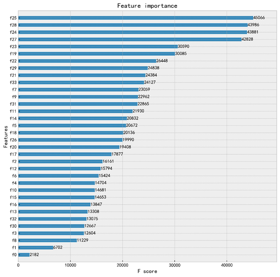
部分重要特征解释：
特征 解释 维度
分析
lastpvgap
一年内距上次访问时长
用户
用户是否活跃
visitnum_oneyear
年访问次数
用户
用户是否活跃
cityuvs
昨日访问当前城市同入住日期的app uv数
用户
用户是否流失到别的平台
sid
会话id，sid=1可认为是新访
用户
新老用户
lasthtlordergap
一年内距离上次下单时长
订单
用户是否活跃
ctrip_profits
客户价值
用户
用户价值越高越不容易流失，反之亦然
uv_pre
24小时历史浏览次数最多酒店历史uv
酒店
用户偏好的酒店的热度
h
访问时间点
订单
用户是否活跃
lowestprice_pre
24小时内已访问次数最多酒店可订最低价
酒店
用户偏好的酒店价格
jd_people_max
酒店点评浏览
酒店
对于预订网站，评价 是影响用户做决定的重要因素